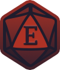

<div class="sidebar-wrapper">
  <div class="site-info" [routerLink]="'/'" (click)="hideSidebarOnClick ? closeMenu.emit() : null">
    
<!--    <div class="logo-wrapper">-->
<!--      -->
<!--      -->
<!--      -->
<!--    </div>-->
    <h1>Е<span class="glow">Н</span>Е<span class="glow">РІ</span></h1>
  </div>

  <mat-nav-list>
    <ng-container *ngIf="user$ | async as user else notAuthenticated">
      <button *ngIf="user && user.role === 'superAdmin'" class="admin-btn" mat-icon-button [routerLink]="['/', 'admin']">
        <mat-icon>admin_panel_settings</mat-icon>
      </button>
      <a [routerLink]="['user', user.username]" routerLinkActive="active" [routerLinkActiveOptions]="{exact: true}" (click)="hideSidebarOnClick ? closeMenu.emit() : null">
        <mat-list-item>{{user.gameRole === 'both' ? 'Майстер:' : 'Гравець:'}} <span class="primary-text semibold">{{user.username}}</span></mat-list-item>
      </a>
      <ng-container *ngFor="let item of links">
        <a *ngIf="!item.permissions || item.permissions === user.gameRole" [routerLink]="item.link"
          routerLinkActive="active" [routerLinkActiveOptions]="{exact: true}"
          (click)="hideSidebarOnClick ? closeMenu.emit() : null">
          <mat-list-item>{{item.text}}</mat-list-item>
        </a>
      </ng-container>
    </ng-container>

    <ng-template #notAuthenticated>
      <mat-list-item (click)="dialog('signup')">СТАТИ АВАНТЮРИСТОМ</mat-list-item>
      <mat-list-item (click)="dialog('signin')">ЗАЙТИ У ГІЛЬДІЮ</mat-list-item>
      <a [routerLink]="''"
        routerLinkActive="active" [routerLinkActiveOptions]="{exact: true}"
        (click)="hideSidebarOnClick ? closeMenu.emit() : null">
        <mat-list-item>ІГРИ</mat-list-item>
      </a>
      <a [routerLink]="'game-requests'"
        routerLinkActive="active" [routerLinkActiveOptions]="{exact: true}"
        (click)="hideSidebarOnClick ? closeMenu.emit() : null">
        <mat-list-item>ЗАПИТИ ГРИ</mat-list-item>
      </a>
    </ng-template>
  </mat-nav-list>

  <hr class="m-t-0">

  <div class="p-l-16 p-r-16 p-t-8">
    <app-search [disabled]="filtersDisabled" (searchText)="search($event)" #searchComponent></app-search>

    <form class="form" [formGroup]="form">
      <mat-form-field>
        <mat-label>Сортувати</mat-label>
        <mat-select formControlName="sort" (selectionChange)="submit()">
          <mat-option  [value]="0">Найближчі</mat-option>
          <mat-option  [value]="1">Нові</mat-option>
        </mat-select>
      </mat-form-field>

      <h3 class="primary-text m-t-5">Фільтри</h3>

      <mat-form-field>
        <mat-label>Обери гру</mat-label>
        <mat-select formControlName="gameSystemId">
          <mat-option [value]="null">Будь-яка</mat-option>
          <mat-option *ngFor="let item of gameSystems" [value]="item._id">{{item.name}}</mat-option>
        </mat-select>
      </mat-form-field>

      <mat-form-field>
        <mat-label>Місто, або онлайн</mat-label>
        <mat-select formControlName="cityCode">
          <mat-option  [value]="null">Будь-яке</mat-option>
          <mat-option *ngFor="let city of cities" [value]="city.code">{{city.name}}</mat-option>
        </mat-select>
      </mat-form-field>
    </form>

    <div class="d-flex justify-end align-center">
<!--      <mat-slide-toggle [disabled]="filtersDisabled" [checked]="isShowSuspended" (change)="showSuspended()" class="m-l-15">Закриті ігри</mat-slide-toggle>-->
      <button mat-raised-button color="primary" (click)="submit()" [disabled]="filtersDisabled">
        Фільтрувати
      </button>
    </div>
  </div>

  <hr class="m-t-20">

  <div class="d-flex columns">
    <div>
      <mat-nav-list>
        <a [routerLink]="'/about'" (click)="hideSidebarOnClick ? closeMenu.emit() : null">
          <mat-list-item>Про ЕНЕРІ</mat-list-item>
        </a>
        <mat-list-item (click)="partnersDialog()">Партнери</mat-list-item>
      </mat-nav-list>
    </div>

    <div>
      <h4>Соц. мережі:</h4>
      <button class="telegram" mat-icon-button
              (click)="openTg()" matTooltipClass="tooltip" matTooltip="Новини Енері">
        <mat-icon>telegram</mat-icon>
      </button>
    </div>
  </div>

  <div class="p-l-16 p-r-16 p-t-8 p-b-10" *ngIf="user$ | async">
    <button mat-stroked-button color="warn" (click)="logout()" [routerLink]="'/'" class="w-100 m-t-10">Вийти</button>
  </div>

<!--  <mat-card>-->
<!--    <nav>-->
<!--      <a [routerLink]="'/'" routerLinkActive="active" [routerLinkActiveOptions]="{exact: true}" (click)="tryCloseMenu()">-->
<!--        <span>Some text</span>-->
<!--      </a>-->
<!--    </nav>-->
<!--  </mat-card>-->
</div>
